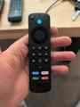
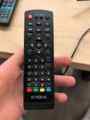
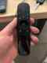
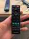
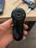
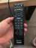
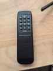

Guía rápida del Chillout
Comandos de voz, uso del Fire Stick, mandos y soluciones rápidas.

Mando principalUsa siempre el Fire TV
Para YouTube, Twitch, Netflix, Prime Video y casi todo lo demás, usa siempre el Fire Stick.
Cómo hablar con Alexa
- Mantén pulsado el botón azul.
- Di el comando.
- Suelta el botón.
“Abre YouTube”
“Abre Twitch”
“Abre Netflix”
“Abre Prime Video”
Comandos principales
“Enciéndelo todo”
“Apágalo todo”
“Pon el Fire Stick en el proyector”
“Pon el Fire Stick en la tele”
“Verano”
“Invierno”
“Apaga el aire”
“Pon más brillo al fuego”
“Pon menos brillo al fuego”
Canales y otras fuentes
“Pon los canales en el proyector”
“Pon los canales en la tele”
“Pon el PC en el proyector”
“Pon el PC en la tele”
“Pon la Wii en el proyector”
“Pon la Wii en la tele”
Mandos de apoyo - fotos originales

TDT STRONGPara cambiar de canal cuando ya estén puestos los canales.

Barra de sonido LGVolumen y comprobación de HDMI.

Proyector ViewSonicRespaldo para encender y apagar. Para apagar, pulsa dos veces.

Tele interior LGSi no se ve, pon la fuente en HDMI.

Tele exterior SonyEncender, apagar, volumen y fuente HDMI.
Aire acondicionadoAjusta la temperatura y confirma con ON/OFF.

HDMI splitter 6x2Parte superior: proyector. Parte inferior: tele.
Si algo no va
Proyector: enciende proyector y barra LG; la barra debe poner HDMI.
Tele: pon la fuente en HDMI.
PC: conecta HDMI y USB de alimentación.
Música: apaga zonas y baja volumen hasta el clic.
Audio por zonas
Zona 1: cristalera exterior · Zona 2: interior · Zona 3: barbacoa · Zona 4: no se usa.
Importante: “Apágalo todo” puede cambiar incorrectamente el estado de algún aparato. Si pasa, espera y apágalo individualmente.